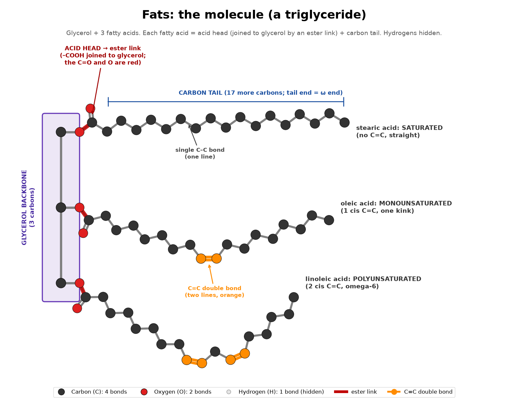
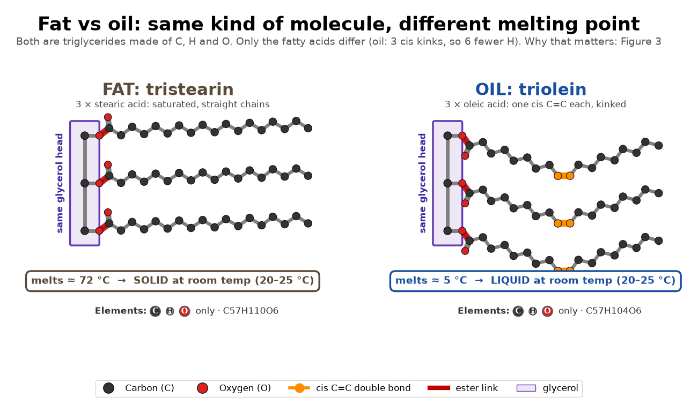
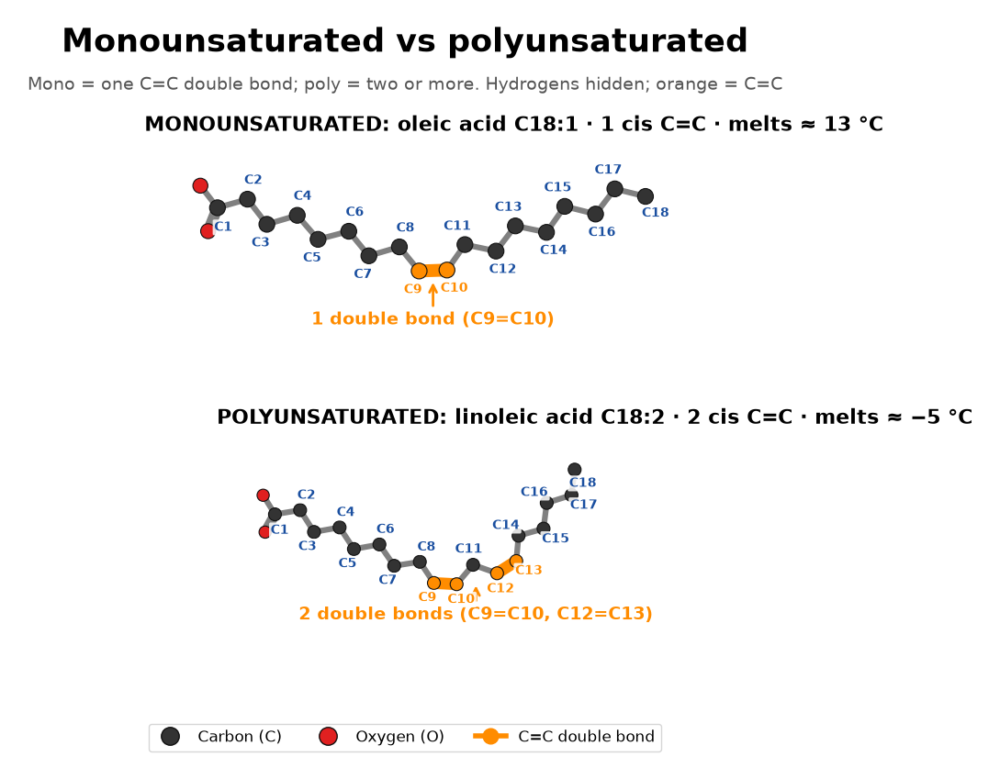
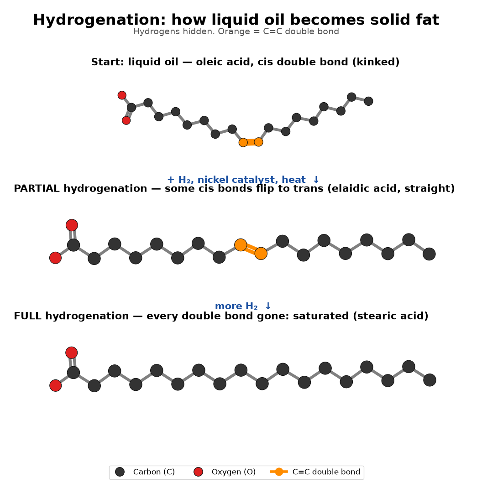

Fats: the molecule


Fat vs oil (lower image): butter and olive oil are the same kind of molecule, made of the same elements (C, H, O). The difference is which fatty acids sit on the glycerol. Fats such as butter, lard and cocoa butter carry more saturated, straight chains; oils such as olive, canola and sunflower carry more cis double bonds, so kinked chains with slightly fewer hydrogens. That mix sets the melting point (pure tristearin melts at about 72 °C, pure triolein at about 5 °C). "Fat" or "oil" only names the state at room temperature (about 20–25 °C), not a different chemical class, and every real fat is a mix, so it is a matter of degree: coconut oil is mostly saturated and melts around 24 °C, so it is solid in a cool room and liquid in a warm one. Why the shape matters: Figure 3. Trans fats (Figure 2) are mostly man-made.
Saturated vs unsaturated vs trans

Why some fats are solid and some oils are liquid

Monounsaturated vs polyunsaturated

Omega-3 vs omega-6: count from the tail

Hydrogenation: how oils become solid fats

Melting points and body fat
Quiz
Tap a question to see the answer
1. How many bonds does carbon make, and how many does hydrogen make?
Carbon 4, hydrogen 1, oxygen 2 (Figure 1).
2. What are the parts of a triglyceride, and which part of a fatty acid joins the glycerol?
A glycerol backbone plus 3 fatty acids. Each fatty acid's acid head (–COOH) joins glycerol through an ester link; the carbon tail sticks out (Figure 1).
3. Are fats and oils different kinds of molecule?
No. Both are triglycerides made of C, H and O. Oils carry more cis-unsaturated, kinked chains, so they melt below room temperature; "fat" or "oil" just names the state at about 20–25 °C (Figures 1 and 3).
4. What does "saturated" mean?
Every tail carbon holds as many hydrogens as it can, because there are no double bonds (Figure 2).
5. Why is butter solid at room temperature while olive oil is liquid?
Butter is rich in saturated fatty acids with straight chains that pack tightly. Olive oil is mostly oleic acid, whose cis double bond kinks the chain so it can't pack (Figures 2 and 3).
6. What does the "3" in omega-3 mean, and where do you start counting?
Count from the tail (ω) end, ω1 = last carbon; the first double bond starts at carbon 3 (Figure 5).
7. Which omega-3s come straight from fish or algae?
EPA and DHA. Plant ALA converts to them only poorly (Figure 5, pink box).
8. How is industrial trans fat made, and why does it behave like saturated fat?
By partial hydrogenation of vegetable oil, which flips some cis double bonds to trans (Figure 6). A trans double bond keeps the chain nearly straight, so it packs and solidifies like saturated fat (Figures 2 and 3).
9. Name a natural source of trans fat.
Milk, butter, cheese, beef or lamb: vaccenic acid made by bacteria in cows, sheep and goats (Figure 2, note).
10. Do steroid hormones come from saturated fat?
No. They are made from cholesterol, which the liver can build from fat breakdown products (Figure 2, pink box).